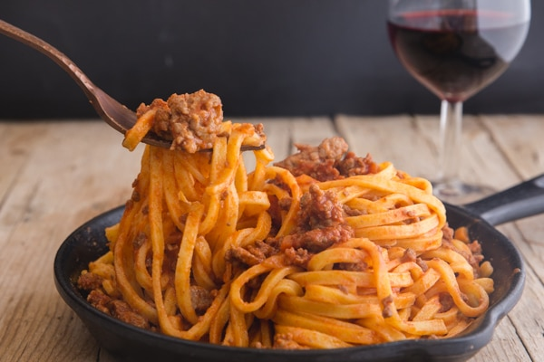

Traditional Bolognese Sauce

Description
This delicious Authentic Bolognese Sauce or Ragu alla Bolognese is made with few ingredients and lots of patience. A true Bolognese takes time, but it is so worth it.
I have been asked a few times for a Traditional Bolognese Sauce and after asking some friends and family, I am happy to say this is about an Authentic Bolognese Sauce is going to get without going to Bologna.
Ingredients
- 2 tbsp olive oil
- 1 small carrot
- 1 small celery stalk
- 1 small onion
- 1 lb ground beef
- 1 lb groud pork
- 1/2 cup dry red wine
- 2 tbsp tomato paste
- 2 cups tomato puree
- 3 pinches of salt
- 2 dashes pepper
- 2 whole bay leaves
- 1/3 cup whole milk
Directions
- Cut the carrot, celery and onion very fine (must not too much that it becomes pulpy when cooked).
- In a medium to large heavy pot add the olive oil and chopped vegetables, cook covered on low heat (stirring occasionally) until onion is transparent.
- Increase the heat to medium and add the ground beef and pork. Stirring as the meat is cooking to break up the pieces. Once the meat has browned turned the heat up to high and add the wine.
- Cook until the alcohol has evaporated and the liquid has evaporated. Decrease the heat to medium/low and add the tomato paste, puree, salt, pepper and bay leaf. Gradually decrease the heat to the lowest setting cover and let simmer for three hours (the mixture should not boil). Stir occasionally.
- After the time has passed remove the bay leaf and add the milk, heat thoroughly for a couple of minutes. Serve over cooked pasta. Enjoy!
Recipes Home Page